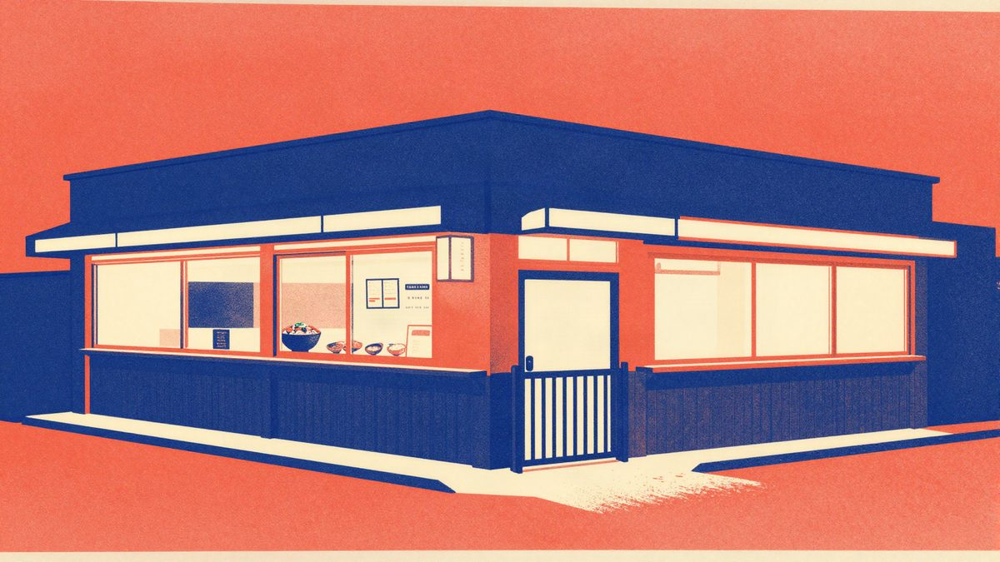

Qoo10 hakiran: izloženi podaci više od 30 milijuna članova, među njima adrese i geokoordinate

eBay Japan, operater japanske e-trgovine Qoo10, objavio je 12. studenoga da je 6. studenoga došlo do neovlaštenog pristupa njihovim sustavima. Među mogućim izloženim podacima su adrese, geografske koordinate adresa i tjelesne karakteristike koje su korisnici sami upisali u profil. Qoo10 ima više od 30 milijuna članova, a koliko ih je stvarno pogođeno, još nije poznato.
eBay Japan, koji upravlja japanskim marketplaceom Qoo10, objavio je 12. studenoga da je 6. studenoga došlo do neovlaštenog pristupa njihovim sustavima. Napadač je imao uvid u dio osobnih podataka korisnika. Qoo10 ima više od 30 milijuna članova, a eBay Japan navodi da su možda pogođeni podaci samo dijela njih.
Prema priopćenju, među mogućim izloženim podacima su ime i nadimak, adresa e-pošte, broj telefona, datum rođenja i spol. Tu su i podaci iz profila, adresa korisnika, adrese dostave i geografske koordinate adrese. Možda su izloženi i korisnički segment, identifikatori računa, IP adrese, osobne bilješke i stanje bodova.
Posebno se izdvajaju koordinate adresa i tjelesne karakteristike koje su korisnici dobrovoljno unijeli. Koje su to karakteristike, eBay Japan nije naveo. U priopćenju piše samo da bi i ti podaci mogli biti među pogođenima.
Što je poduzeto
Prema navodima eBay Japana, neovlašteni pristup otkriven je i odmah blokiran. Poništeni su svi autentifikacijski tokeni koji su možda bili nezakonito izdani ili korišteni, a računi koji su možda pogođeni prisilno su odjavljeni. Detaljna istraga još traje.
Koliko je korisnika stvarno pogođeno, još nije poznato, kao ni kako je napadač došao do sustava. Nije rečeno ni utječe li incident na korisnike izvan Japana, pa ni na one u Europi.
Izvor: ITmedia NEWS
Povezani članci
 Asobuview: procurilo 15,8 milijuna zapisa o članovima preko dobavljača mail usluge Arala4. studenoga 2026.
Asobuview: procurilo 15,8 milijuna zapisa o članovima preko dobavljača mail usluge Arala4. studenoga 2026.
McDonald’s Japan? Ne, Matsuya: procurili podaci 2,38 milijuna korisnika aplikacije30. listopada 2026. Rakuten Travel hakiran: moguće je curenje podataka do 2,6 milijuna korisnika26. listopada 2026.
Rakuten Travel hakiran: moguće je curenje podataka do 2,6 milijuna korisnika26. listopada 2026.